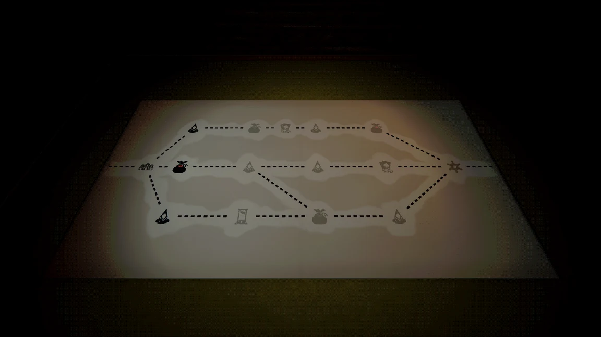
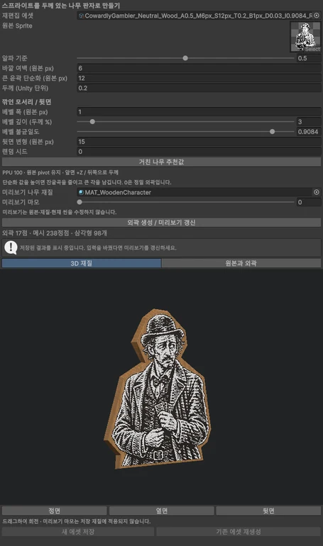
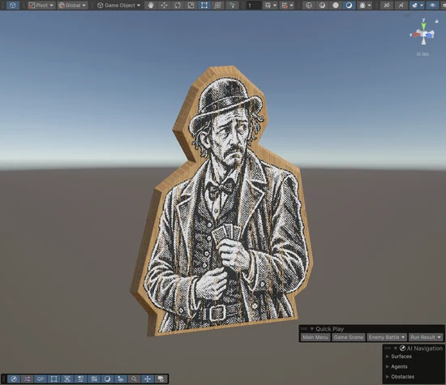
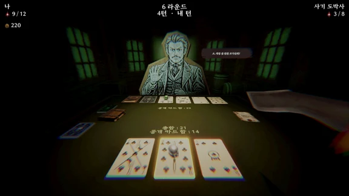
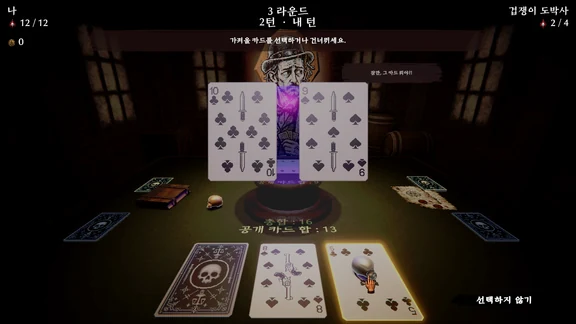

DiaBlackJack
콘셉트부터 엔진 이식까지의 AI 활용 흐름, 재현 가능한 지도 생성과 나무판 캐릭터 제작 도구.

01 / Project film
플레이와 연출
02 / Procedural map
3D 지도 절차 생성


- 과제
- 팀의 진행 그래프를 탐색 가능한 3D 지도로 시각화해야 했습니다.
- 구현
- 노드·길 주변의 여유 공간을 확보하고 남은 영역에 지형과 시설을 배치했습니다. 생성 작업은 여러 프레임에 나눴습니다.
- 결과
- 같은 시드로 배치를 재현하고, 지역별 모델·배치 규칙·조명을 적용한 다섯 테마로 확장했습니다.
02 / MESH GENERATION TOOL
나무판 메시 생성 도구

- 과제
- 윤곽이 다른 캐릭터 스프라이트를 두께가 있는 나무판으로 만들어야 했습니다.
- 구현
- 알파값에서 윤곽을 추출·단순화한 뒤 삼각형으로 나누고 두께를 더하는 에디터 도구를 제작했습니다.
- 결과
- 캐릭터 스프라이트에서 나무판 형태의 3D 메시를 생성하는 흐름을 구성했습니다.
03 / WOOD & PAINT SHADER
나무 단면·페인트 셰이더


- 과제
- 캐릭터가 그려진 앞면과 나무 단면을 구분해 보여줘야 했습니다.
- 구현
- 앞면에는 페인트 표면을, 단면에는 나무 재질을 적용했습니다.
- 결과
- 보따리 상인, 사이비 신도, 보안관과 총잡이에 같은 제작 방식과 표면 표현을 적용했습니다.
COMBAT DIRECTION
카드 효과별 전투 연출
기존 전투 코어와 타임라인을 바탕으로 카드 효과마다 동작과 반응을 연결했습니다.
04 / 리볼버 연출
- 과제
- 리볼버의 동작과 전투 진행을 연결해야 했습니다.
- 구현
- 준비 → 장전 → 발사를 기존 전투 코어·타임라인에 연결하고 카메라, 적의 반응, 효과음 시점을 조절했습니다.
- 결과
- 카드 효과에 따라 리볼버 동작과 피격 반응이 이어지는 전투 연출을 구성했습니다.
05 / 칼 투척 연출

- 과제
- 칼 투척과 적의 반응이 하나의 공격으로 읽혀야 했습니다.
- 구현
- 투척 동작을 전투 타임라인에 연결하고 카메라와 효과음 재생 시점을 조절했습니다.
- 결과
- 카드 효과에서 투척과 적의 반응으로 이어지는 흐름을 구성했습니다.
06 / 수정구슬 카드 선택

- 과제
- 덱의 카드를 미리 보고 고르는 효과를 화면에 표현해야 했습니다.
- 구현
- 수정구슬 안에서 카드를 확인하고 선택하는 동작을 연출했습니다.
- 결과
- 카드 효과를 시각적인 선택 과정으로 연결했습니다.
07 / 망치 타격 연출
- 과제
- 망치의 타격과 적의 반응을 맞춰야 했습니다.
- 구현
- 기존 전투 코어에 타격 동작을 연결하고 카메라 움직임·피격 반응·효과음 시점을 조절했습니다.
- 결과
- 타격 시점에 화면과 적이 함께 반응하는 전투 연출을 구성했습니다.
08 / AI-assisted workflow
AI 활용 제작 과정
NHN AI 해커톤 사전 과제로 시작한 프로젝트입니다. 직접 만든 Codex 스킬 feature-planner로 요구사항과 계획을 정리하고 feature-implementer로 기능을 구현했습니다. 콘셉트 생성부터 Blender MCP를 통한 모델 제작, Unity 이식까지 이어지는 흐름을 구성했습니다.
CREDITS & SCOPE
기여 범위와 작업 기록
진행 그래프와 기존 전투 코어는 팀의 작업을 바탕으로 했습니다. 지도 표시와 배치, 전투 연출, 제작 도구, 셰이더와 3D 에셋 등을 담당했으며 Codex를 제작 과정에 활용했습니다.
기록 기준: 2026.10 포트폴리오, 3–8쪽. 프로젝트 소개본과 보유한 인게임 녹화본을 사용했습니다.